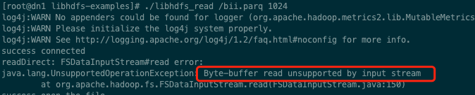
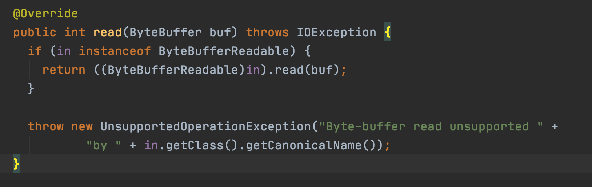
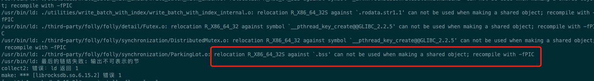
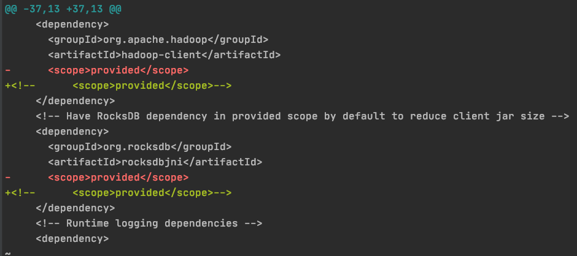
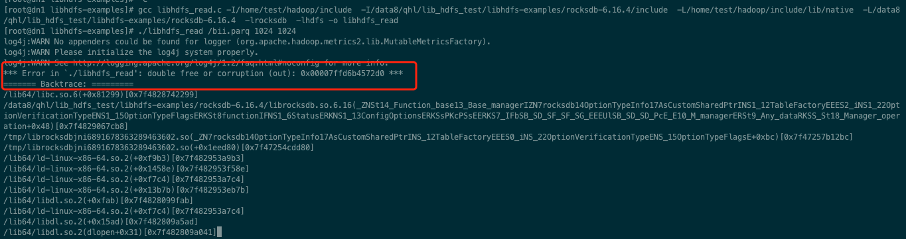
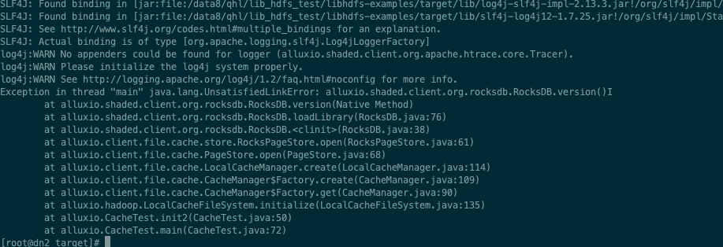

Alluxio[1] 是世界上第一个面向基于云的数据分析和人工智能的开源的数据编排技术。 它为数据驱动型应用和存储系统构建了桥梁, 将数据从存储层移动到距离数据驱动型应用更近的位置从而能够更容易被访问。 这还使得应用程序能够通过一个公共接口连接到许多存储系统。 Alluxio内存至上的层次化架构使得数据的访问速度能比现有方案快几个数量级。
Alluxio本地缓存介绍
Alluxio本地缓存功能可以解决部署Alluxio服务的问题，上层使用Alluxio可以把Alluxio当做一个本地缓存，并且无需部署Alluxio Master、Worker服务，仅仅作为一个lib库即可。客户端缓存的优点显而易见，就是易于部署和集成；但是其缺点也主要有以下两点：
- 跨不同客户端应用程序进程的潜在数据重复；
- 很难实现对集群的细粒度缓存控制；
Alluxio 在2020年初提交的这个PR[1]中实现了本地Local Cache的功能。其主要部分如下所示：
C/C++访问接口
环境准备
有一个HDFS集群，可进行读写
把hadoop的jar包设置CLASSPATH
1 | export HADOOP_HOME=/home/test/hadoop |
- 把Alluxio本地cache的jar包设置进CLASSPATH
1
2ALLUXIO_LOCAL_CACHE_JAR=/data8/qhl/lib_hdfs_test/libhdfs-examples/path/alluxio-shaded-client-2.6.0-SNAPSHOT.jar
CLASSPATH=$CLASSPATH:$ALLUXIO_LOCAL_CACHE_JAR
Alluxio代码修改
由于alluxio.hadoop.LocalCacheFileSystem类并未提供默认构造函数，所以需要新增如下代码：
修改方案1
此方案对应用来说，还需要指明采用alluxio前缀，即fs = hdfsConnect(“alluxio://ip”, port);
此方案需要上层用户修改指明采用alluxio FileSystem，并且用户client的cache配置传递不到DistributedFileSystem上面，因为我们在这里面初始化了一个默认的DistributedFileSystem。1
2
3
4
5
6
7
8
9
10
11
12
13public LocalCacheFileSystem() {
org.apache.hadoop.conf.Configuration tmpConf = new Configuration();
tmpConf.set("fs.hdfs.impl", org.apache.hadoop.hdfs.DistributedFileSystem.class.getName());
try {
org.apache.hadoop.fs.FileSystem fileSystem = FileSystem.get(tmpConf);
HadoopFileOpener fileOpener = uriStatus -> fileSystem.open(new Path(uriStatus.getPath()));
mExternalFileSystem = Preconditions.checkNotNull(fileSystem, "filesystem");
mHadoopFileOpener = Preconditions.checkNotNull(fileOpener, "fileOpener");
mAlluxioFileOpener = status -> new AlluxioHdfsInputStream(mHadoopFileOpener.open(status));
} catch (IOException e) {
LOG.error("initialize LocalCacheFileSystem failed");
}
}
修改方案2
用户client的conf可以透传到DistributedFileSystem上面，并且上层无需修改任何连接方式，还是可以采用fs = hdfsConnect(“ip”, port)的方式连接。
则需要修改如下代码
1 | public LocalCacheFileSystem() { |
Alluxio编译请参考官网Building Alluxio From Source。即采用如下命令可以编译成功：1
mvn -T 2C clean install -DskipTests -Dmaven.javadoc.skip -Dfindbugs.skip -Dcheckstyle.skip -Dlicense.skip -Dskip.protoc
本地cache的jar包在${ALLUXIO_HOME}/shaded/client/targer/alluxio-shaded-client-${version}.jar
读取测试
需要注意的是，读取的时候，hdfs地址的需要根据提供的alluxio cache jar包，填写不同的前缀；如果采用第一种方式，则前缀要写如下格式：“fs = hdfsConnect(“alluxio://ip”, port);”； 如果采用第二种方式编译的alluxio cache jar包，则不需要填写alluxio前缀
编译
gcc libhdfs_read.c -I/home/test/hadoop/include/ -L/home/test/hadoop/lib/native -lhdfs -o libhdfs_read
如果提示libjvm.so找不到，则需要把其加入到LD_LIBRARY_PATH中1
export LD_LIBRARY_PATH=$LD_LIBRARY_PATH:${JAVA_HOME}/jre/lib/amd64/server
读取
./libhdfs_read /bii.parq 1024
1 | #include "hdfs.h" |
上面的代码中有两处需要注意的点：
- 上文提到的hdfs地址，采用不同的allixo源码修改方式，前缀是不一样的。第二种修改源码方式对用户使用友好。
- 如果配置了异步缓存cache，则如果客户端退出很快，则会造成文件不能够及时的刷写到磁盘缓存中。
一些错误

出现此错误是由于Alluxio的读stream中未实现read(ByteBuffer buf)接口。所以在打开文件的时候，就会报此异常。
Alluxio本地缓存的alluxio.client.file.cach.LocalCacheFileInStream未实现org.apache.hadoop.fs.ByteBufferReadable接口。所以会报此错误。
在org.apache.hadoop.fs.FSDataInputStream代码中有这个代码的调用。如下所示：

有人已经给Alluxio提issue，但是被列为低优。https://github.com/Alluxio/alluxio/issues/9883
配置文件
libhdfs_read同级别目录下面需要有一个core-site.xml文件，下面列出一些比较重要的配置，具体每个配置的含义请参考Alluxio的官方网站
1 | <configuration> |
采用rocksdb作为本地缓存
rocksdb编译
请参考官方网站 https://github.com/facebook/rocksdb/blob/master/INSTALL.md， 但是笔者基于官网编译未成功，报如下错误，而是直接参考CMakeList.txt中的注释编译成功的。
1
2# 1. cmake ..
# 2. make -j
Alluxio采用rocksdb缓存
Alluxio源码修改
如果要开启Alluxio采用rocksdb作为本地缓存，则需要修改core-site.xml文件
1 | <property> |
并且重新编译Alluxio cache lib，注意需要修改如下${ALLUXIO_HOME}/shaded/client/pom.xml

把scope为provided注释掉，然后重新打包，加入到环境变量中，否则在运行时，不会打包rocksdbjni的jar包，就会报rocksdbjni中的类找不到的错误。
RocksDB编译安装
可以参考官方安装步骤，
https://github.com/facebook/rocksdb/blob/master/INSTALL.md
并且需要配置如下环境变量1
2
3
4
5
6
7
8
9
10
11export ROCKSDB_HOME=/data8/qhl/lib_hdfs_test/libhdfs-examples/rocksdb-6.16.4
export ROCKSDB_HOME_INCLUDE=$ROCKSDB_HOME/include/
export ROCKSDB_HOME_LIB=$ROCKSDB_HOME
PATH=$JAVA_HOME/bin:$HADOOP_HOME/bin:$HOME/.local/bin:$HOME/bin:$BOOST_LIB:$PATH
export PATH=/usr/local/mysql/bin:$PATH
export CPATH=$CPATH:/usr/local/include/gflags/
export CPLUS_INCLUDE_PATH=$CPLUS_INCLUDE_PATH:$BOOST_INCLUDE
export LD_LIBRARY_PATH=$LD_LIBRARY_PATH:$BOOST_LIB:$HADOOP_HDFS_LIB:$HADOOP_HDFS_LIB_INCLUDE:/usr/local/lib:$ROCKSDB_HOME_LIB:$ROCKSDB_HOME_INCLUDE
export LIBRARY_PATH=$LIBRARY_PATH:$LD_LIBRARY_PATH:/usr/local/lib
测试代码编译
在编译测试代码的时候，加上rocksdb的include路径1
gcc libhdfs_read.c -I/home/test/hadoop/include -I/data8/qhl/lib_hdfs_test/libhdfs-examples/rocksdb-6.16.4/include -L/home/test/hadoop/include/lib/native -L/data8/qhl/lib_hdfs_test/libhdfs-examples/rocksdb-6.16.4 -lrocksdb -lhdfs -o libhdfs_read
但是，最终测试还是会出现如下错误：

几经周转，未能解决，在rocksdb issue上面看到了一样的问题，还是处于待解决状态。
https://github.com/facebook/rocksdb/issues/5194
JAVA 访问接口
JAVA 如下测试代码1
2
3
4
5
6
7
8
9
10
11
12
13
14
15
16
17
18
19
20
21
22
23
24
25
26
27
28
29
30
31
32
33
34
35
36
37
38
39
40
41
42
43
44
45
46
47
48
49
50
51
52
53
54
55
56
57
58
59
60
61
62
63
64
65
66
67
68
69
70
71
72
73
74
75
76package alluxio;
import static com.google.common.hash.Hashing.md5;
import static java.nio.charset.StandardCharsets.UTF_8;
import alluxio.client.file.URIStatus;
import alluxio.hadoop.LocalCacheFileSystem;
import alluxio.wire.FileInfo;
import java.io.IOException;
import java.net.URI;
import java.net.URISyntaxException;
import java.nio.ByteBuffer;
import java.nio.charset.StandardCharsets;
import org.apache.hadoop.conf.Configuration;
import org.apache.hadoop.fs.FSDataInputStream;
import org.apache.hadoop.fs.Path;
import org.apache.hadoop.hdfs.DistributedFileSystem;
public class CacheTest {
private org.apache.hadoop.fs.FileSystem mExternalFileSystem;
private org.apache.hadoop.conf.Configuration mHadoopConf;
private LocalCacheFileSystem localCacheFileSystem;
public CacheTest() {
}
public void init() {
mHadoopConf = new Configuration();
mHadoopConf.set("fs.hdfs.impl", "true");
mHadoopConf.set("alluxio.user.local.cache.enabled", "true");
mHadoopConf.set("alluxio.user.client.cache.dir", "/tmp/qhl/alluxio");
mHadoopConf.set("alluxio.user.client.cache.store.type", "ROCKS");
mHadoopConf.set("alluxio.user.client.cache.async.write.enabled", "false");
org.apache.hadoop.fs.FileSystem fileSystem = new DistributedFileSystem();
fileSystem.setConf(mHadoopConf);
localCacheFileSystem = new LocalCacheFileSystem(fileSystem);
}
public void init2(String uriString) throws URISyntaxException, IOException {
URI uri = new URI(uriString);
localCacheFileSystem.initialize(uri, mHadoopConf);
}
public FSDataInputStream openFile(Path path) throws IOException {
FileInfo info = new FileInfo()
.setFileIdentifier(md5().hashString(path.toString(), UTF_8).toString())
.setPath(path.toString())
.setFolder(false);
URIStatus status = new URIStatus(info);
FSDataInputStream cachingInputStream = localCacheFileSystem.open(status, 1024);
return cachingInputStream;
}
public void close() throws IOException {
localCacheFileSystem.close();
}
public static void main(String[] args) throws IOException, URISyntaxException {
CacheTest test = new CacheTest();
test.init();
// 注意前缀要根据修改的alluxio cache 源码的不同而不同
String uriStr = "hdfs://172.16.48.5:9000";
test.init2(uriStr);
String path = "/bii.parq";
FSDataInputStream inputStream = test.openFile(new Path(path));
byte[] buffer = new byte[10];
int res = inputStream.read(buffer, 0, 10);
inputStream.close();
test.close();
}
}
但是会报如下错误：

经过咨询Alluxio的创始成员范斌博士，其说采用rocksdb作为本地缓存还处于实验状态，未经过验证。